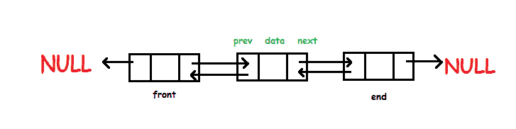
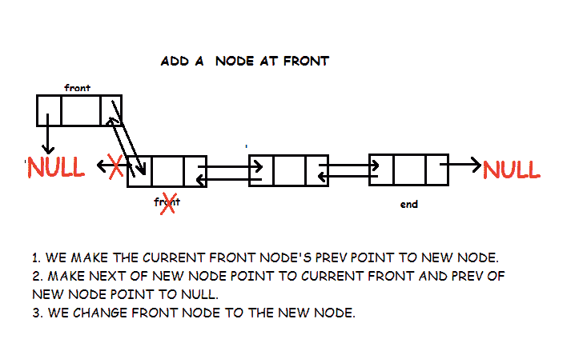
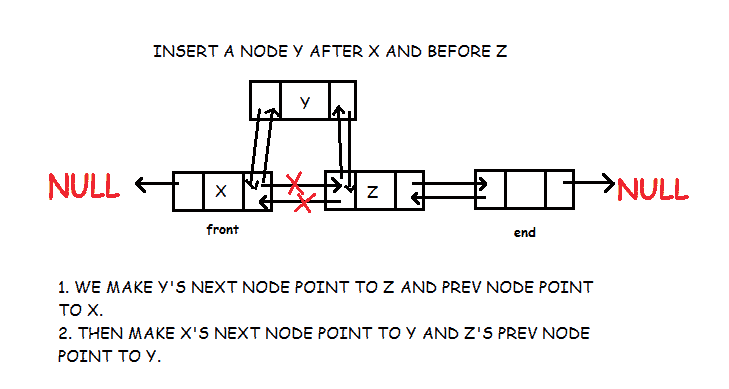
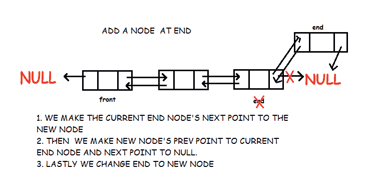
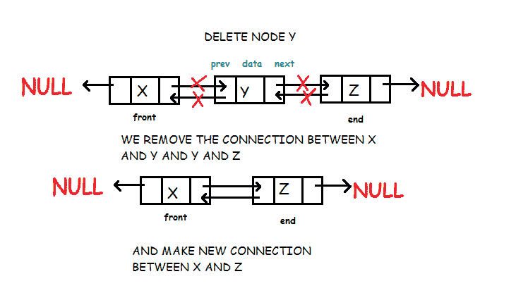

双向链表
原文：https://www.studytonight.com/data-structures/doubly-linked-list
双向链表是一种类型的链表，其中每个节点除了存储其数据之外还有两个链接。第一个链接指向列表中的上一个节点，第二个链接指向列表中的下一个节点。列表的第一个节点的前一个链接指向空。同样，列表的最后一个节点的下一个节点指向空。

这两个链接帮助我们向前和向后遍历列表。但是存储一个额外的链接需要一些额外的空间。
双链表的实现
首先我们定义节点。
struct node
{
int data; // Data
node *prev; // A reference to the previous node
node *next; // A reference to the next node
};
现在我们定义我们的类双链表。它有以下方法:
- add_front: 在列表开头增加一个新节点
- add_after: 在另一个节点后添加一个新节点
- add_before: 在另一个节点之前添加一个新节点
- add_end: 在列表末尾添加新节点
- 删除:删除节点
- 正向遍历:正向遍历列表
- 向后遍历:向后遍历列表
class Doubly_Linked_List
{
node *front; // points to first node of list
node *end; // points to first las of list
public:
Doubly_Linked_List()
{
front = NULL;
end = NULL;
}
void add_front(int );
void add_after(node* , int );
void add_before(node* , int );
void add_end(int );
void delete_node(node*);
void forward_traverse();
void backward_traverse();
};
在开头插入数据
- 第一个节点的 prev 指针将始终为空，下一个的将指向前方。
- 如果插入的节点是列表的第一个节点，那么我们让前面的和末端的指向这个节点。
- 否则我们只让前面的指向这个节点。

void Doubly_Linked_List :: add_front(int d)
{
// Creating new node
node *temp;
temp = new node();
temp->data = d;
temp->prev = NULL;
temp->next = front;
// List is empty
if(front == NULL)
end = temp;
else
front->prev = temp;
front = temp;
}
在节点前插入数据
假设我们在 Y 之前插入节点 X，那么 X 的下一个指针将指向 Y，X 的上一个指针将指向 Y 的上一个指针所指向的节点。Y 的上一个指针现在指向 X。我们需要确保如果 Y 是列表的第一个节点，那么在添加 X 之后，我们会指向 X

void Doubly_Linked_List :: add_before(node *n, int d)
{
node *temp;
temp = new node();
temp->data = d;
temp->next = n;
temp->prev = n->prev;
n->prev = temp;
//if node is to be inserted before first node
if(n->prev == NULL)
front = temp;
}
在节点后插入数据
假设我们在 X 之后插入节点 Y，那么 Y 的上一个指针将指向 X，Y 的下一个指针将指向节点 X 的下一个指针。现在，X 的下一个指针将指向 Y。我们需要确保如果 X 是列表的最后一个节点，那么在添加 Y 之后，我们将结束点指向 Y
void Doubly_Linked_List :: add_after(node *n, int d)
{
node *temp;
temp = new node();
temp->data = d;
temp->prev = n;
temp->next = n->next;
n->next = temp;
//if node is to be inserted after last node
if(n->next == NULL)
end = temp;
}
在末尾插入数据
- 最后一个节点的下一个指针将始终为空，上一个将指向结束。
- 如果插入的节点是列表的第一个节点，那么我们将前端和末端指向这个节点。
- 否则我们只对这个节点进行终结。

void Doubly_Linked_List :: add_end(int d)
{
// create new node
node *temp;
temp = new node();
temp->data = d;
temp->prev = end;
temp->next = NULL;
// if list is empty
if(end == NULL)
front = temp;
else
end->next = temp;
end = temp;
}
移除节点
在双向链表中删除节点非常容易，但是如果要删除的节点是链表的第一个或最后一个元素，则需要特殊处理。与我们需要前一个节点的单链表不同，这里只需要被删除的节点。我们只需使上一个节点的下一个指向当前节点(要删除的节点)的下一个，下一个节点的上一个指向当前节点的上一个。更多细节请查看代码。

void Doubly_Linked_List :: delete_node(node *n)
{
// if node to be deleted is first node of list
if(n->prev == NULL)
{
front = n->next; //the next node will be front of list
front->prev = NULL;
}
// if node to be deleted is last node of list
else if(n->next == NULL)
{
end = n->prev; // the previous node will be last of list
end->next = NULL;
}
else
{
//previous node's next will point to current node's next
n->prev->next = n->next;
//next node's prev will point to current node's prev
n->next->prev = n->prev;
}
//delete node
delete(n);
}
向前遍历
从前面的节点开始，访问所有节点，直到该节点变为空。
void Doubly_Linked_List :: forward_traverse()
{
node *trav;
trav = front;
while(trav != NULL)
{
cout<<trav->data<<endl;
trav = trav->next;
}
}
向后遍历
从结束节点开始，访问所有节点，直到该节点变为空。
void Doubly_Linked_List :: backward_traverse()
{
node *trav;
trav = end;
while(trav != NULL)
{
cout<<trav->data<<endl;
trav = trav->prev;
}
}
现在我们已经了解了双向链表，您还可以查看其他类型的链表: